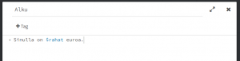
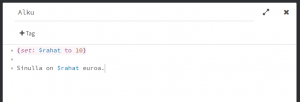
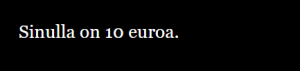
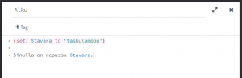
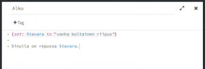

Muuttuja on olio, johon voi tallettaa muistiin yhden asian. Koska kukin muuttuja muistaa vain yhden asian, muuttujia voi olla useita, yksi kullekin muistettavalle asialle. Muuttujat erottaa toisistaan nimen perusteella.
Samalla tavalla kuin kaksoishakasulut merkitsevät tarinassa mikä teksti on klikattava, muuttujat erotetaan tavallisesta tekstistä merkitsemällä dollarimerkki $ niiden nimen eteen.
Muuttujia tarinassa voi olla esimerkiksi pelaajan rahojen lukumäärä
$rahat
Pelin kuluessa rahojen määrä voi muuttua. Siitä tulee olion nimi muuttuja. Muuttuja pitää muistissa esimerkiksi paljonko rahaa pelaajalla on.
Muuttuja voi kertoa myös onko pelaajalla oven avaamiseen tarvittava avain
$avain
tai mikä tavara pelaajalla on mukanaan (pelaaja voi esimerkiksi ottaa alussa mukaana pyyhkeen, taskulampun tai narukerän, mutta vain yhden näistä)
$tavara
Kirjoitetaan tarina, jossa käytetään muuttujaa. Käytetään muuttujaa joka kertoo rahojen määrän.

Peli näyttää kokeiltaessa tältä.
Twine ei näytä tarinassa muuttujan nimeä vaan sen arvon joka siihen on tallennettu. Jos muuttujaa ei ole ennen käytetty, sen arvo on nolla.
Jos haluamme antaa pelaajalle alussa käytettäväksi 10 euroa, se tehdään set-makrolla.

Jos nyt kokeilemme tarinaa, se näyttää tältä. Asetimme muuttujan $rahat arvoksi 10, jolloin Twine näyttää muuttujan arvon tekstissä.

Set-makro on komento, jolla käskemme tietokoneen sijoittamaan muuttujaan halutun arvon. Se kirjoitetaan sulkujen sisään, jotta tietokone tietää ettei kyse ole tavallisesta tekstistä ja että sitä ei pidä näyttää pelaajalle.
Set tulee englanninkielestä ja se tarkoittaa asettamista tai laittamista. Sen ja kaksoispisteen jälkeen tulee dollarilla alkava muuttujan nimi. Sana to on myös englantia ja tarkoittaa suomenkielessä suunnilleen johonkin. Sen jälkeen tulee arvo joka sijoitetaan muuttujaan.
Yleisiä muuttujan arvoja ovat numero ja teksti. Yllä rahan määrä oli numero. Jos haluamme sijoittaa muuttujaan tekstin, teksti tulee kirjoittaa lainausmerkkeihin, esimerkiksi seuraavasti.

Tämä näyttää pelattaessa tältä.
Lainausmerkit tekstin ympärillä tarvitaan koska teksti voi sisältää välilyöntejäkin esimerkiksi seuraavasti.

Mikä näyttää pelissä tältä.
Katsotaan seuraavaksi isommat esimerkit kuinka muuttujia voi käyttää.